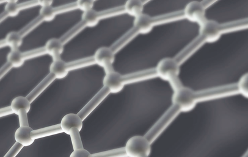
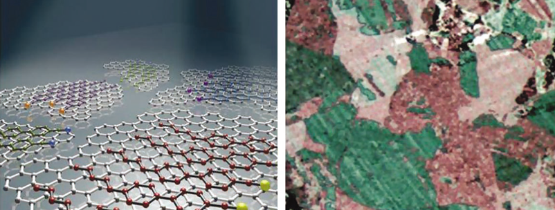

주제별 연구성과
주제별 연구성과
KAIST RESEARCH ACHIEVEMENTS
꿈의 물질 그래핀의 결정면을
편광현미경으로 쉽게 관찰할 수 있다.
생명화학공학과 정희태
요약
2020년 기존의 유리 기판 위에 조립된 전자 기기들은 유연하고 구부릴 수 있는 기판위에 제작된다. 이러한 유연한 플라스틱 기판을 사용하여 제작된 기기들은 질기고 구부림이 자유로워 휴대성이 극대화되고, 의류용 패션, 의료용 진단 등 목적에 따라 다양한 디자인의 소자가 구현된다. 이러한 소자의 핵심인 투명전극에는 기존의 인듐과 같은 희토류 기반이 아닌, 화학 기상 증착 방법을 이용하여 합성된 그래핀과 같은 탄소 소재 전극이 주류가 될 것이다.
연구내용

그래핀 결정면의 광학적 시각화 방법은 손쉬운 액정 코팅방법을 사용함으로써 그 작업이 단순하고 시간과 비용이 줄어드는 동시에 편광현미경으로 관찰 가능한 범위(~수cm 이상)의 매우 넓은 영역의 결정구조를 확인할 수 있어 그래핀 특성을 연구하는데 필수적이다. 이 방법은 CVD로 합성된 그래핀 뿐만 아니라, 다양한 합성법 (기계적 박리, 화학적 합성 등)으로 만들어진 모든 그래핀 도메인 관찰에 적용 가능한 기술로서, 향후 그래핀 소재 연구분야에서 광범 위하게 사용될 수 있을 것으로 예상된다.
그래핀은 투명하고 우수한 전기적 특성을 지니고 자유자재로 구부릴 수 있어, 현재 투명전극으로 쓰이고 있는 ITO를 대체할 수 있는 유력한 물질로 평가되고 있다. 또한 기계적으로 안정하고 자유자재로 휘어질 수 있어 미래 플렉서블 소자의 핵심 소재로 쓰일 수 있다. 그래핀의 특성이 결정면의 경계에 큰 영향을 받으므로, 현재 제조되는 다결정 그래핀은 단결정일 때보다 상당히 낮은 전기적·기계적 특성을 보인다. 양질의 그래핀을 제조하기 위해 그래핀 결정면의 영역과 경계를 쉽고 빠르게 관찰하는 것이 향후 그래핀의 물성을 크게 향상하고 상업화 하기 위해 꼭 필요한 핵심기술이다.
현존하는 SEM, TEM, STM 등의 분석기기는 그래핀의 결정면을 관찰할 수 없고, 가능하더라도 그 측정 범위가 수백 나노미터에 불과하다. 또한 그 공정이 복잡하고, 고가의 분석장비를 필요로 하며, 측정하는데 많은 시간이 필요로 한다. 따라서, 저렴하고, 대면적에서 쉽게 그래핀의 결정을 관찰할 수 있는 방법을 개발하는 것이 필요한 시점이다.
그림 1(좌) 모식도에서 보는바와 같이, 그래핀 표면에 형성된 네마틱 액정분자의 알킬분자구조는 그래핀 층의 육각형 구조의 지그재그 간격과 일치하기 때문에, 그래핀 층의 결정 방향에 따라 각 도메인에서 적합한 방향으로 에피택시(epitaxy)하게 배향 된다. 또한, 액정 분자체에 포함된 벤젠링 구조는 sp2 혼성결합으로 이루어진 육각형 벌집모양의 그래핀 표면과 강한 상호작용을 하여, 액정 분자체의 배향은 그래핀 도메인 배향과 일치하여 배향될 수 있다. 이렇게 그래핀의 도메인에 따라 배향된 액정분자체의 복굴절 색상을 편광현미경으로 관찰하게 되면, 그림 1(우)에서 보는 바와 같이 그래핀 도메인에 따라 액정 층이 각각 다른 색을 띄게 되어 그래핀의 도메인과 경계구조를 광학적으로 손쉽게 확인할 수 있다.

그림 2. (좌) 그래핀 결정면을 따라 배향된 액정분자 배향 모식도
(우) 편광현미경으로 관찰된 실제 그래핀 결정면의 모습
연구비 지원
- National Research Laboratory Program (R0A-2007-000-20037-0, NRF)
- World Class University Program(R32-2008-000-10142-0, NRF)
- The Global Frontier Research Center for Advanced Soft Electronics
연구실적
- 논문 : Nature Nanotechnology 7, 29-34(2012)
- 특허 : Method for optical visualizing of graphene domains